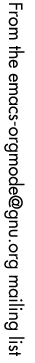

|
From: Karl Voit <devnull <at> Karl-Voit.at>
Subject: Re: Using source blocks instead of Ansible Newsgroups: gmane.emacs.orgmode Date: 2016-05-05 21:02:28 GMT (10 weeks, 2 days, 11 hours and 54 minutes ago) * William Denton <wtd <at> pobox.com> wrote:
>
> Is anyone using Org for remote configuration management instead of a tool=
> like=20
> Ansible?
Yes. I do.
A month ago, I had to set up three Xubuntu machines from scratch
with a very similar setup. Not everything worked perfectly. Some
steps required manual changing to the running ssh/shell-session and
entering passwords and so on directly before I could continue with
C-c C-c of the next block.
Overall, I was happy with my approach. It did not require as much of
a learning (and setup) effort as Ansible which I don't know yet.
IMHO the effort-value-ratio was quite good.
My approach:
* SYSTEM SETUP
:PROPERTIES:
:VAR: system="myhostname" host="192.168.1.2" user="user" gitname="git name"
gitemail="user <at> gmx.at" server="192.168.1.1"
:SESSION: 2016-03-22-remote-Linux-setup
:results: output
:tangle: ~/2016-03-22-remote-Linux-setup.sh
:shebang: #!/bin/sh
:comments: org
:END:
Setting defining myexit() and set_variable_equalsign()
#+BEGIN_SRC sh
myexit()
{
[ "x$2" == "x" ] || echo "ERROR: $2"
[ "$1" -lt 1 ] && echo "$FILENAME done."
[ "$1" -gt 0 ] && echo "$FILENAME aborted with errorcode $1."
exit $1
}
set_variable_root_equalsign()
{
FILE="${1}"
KEY="${2}"
VALUE="${3}"
[ "x${VALUE}" == "x" ] && myexit 42 "set_variable_equalsign did not receive three arguments"
sudo sed -i "s/^\(${KEY}\s*=\s*\).*\$/\1$VALUE/" "${FILE}"
return_value=$?
[ ${return_value} -eq 0 ] || echo "Could not set \"$KEY\" to \"$VALUE\" in \"$FILE\": error code ${return_value}"
}
#+END_SRC
#+BEGIN_SRC sh
echo "ssh-copy-id $user <at> $host"
#+END_SRC
Create ssh connection:
#+BEGIN_SRC sh
ssh $user <at> $host
#+END_SRC
Testing user, host, and sudo: *enter sudo Password in session* buffer!
#+BEGIN_SRC sh
date
echo "my new host: $HOSTNAME"
echo "my username: $USER"
sudo head -n 1 /etc/shadow && echo "success"
#+END_SRC
#+BEGIN_SRC sh
echo "$0: install ssh and related ..."
DEBPACKAGES="openssh-server ssh-askpass ssh autossh"
sudo apt-get install --yes ${DEBPACKAGES}
#+END_SRC
#+BEGIN_SRC sh
echo "$0: setup git for root ..."
sudo git config --global user.name "$gitname"
sudo git config --global user.email "$gitemail"
#+END_SRC
#+BEGIN_SRC sh
FILE="/etc/etckeeper/etckeeper.conf"
KEY="VCS"
VALUE="git"
set_variable_root_equalsign "${FILE}" "${KEY}" "${VALUE}"
cd /etc
sudo etckeeper init
sudo etckeeper commit "Initial commit of Org-mode setup script"
#+END_SRC
#+BEGIN_SRC sh
echo "$0: get my emacs config ..."
DOTEMACSSRC="$server:.emacs.d"
cd $HOME
scp -qr ${DOTEMACSSRC} .
echo "$0: create host-specific init.el ..."
cd .emacs.d
cp init-gary.el init-${hostname}.el
rm init.el
ln -s init-${hostname}.el init.el
#+END_SRC
Scale fonts in Xfce:
#+BEGIN_SRC sh
export DISPLAY=:0.0
## query current value:
xfconf-query -c xsettings -p /Xft/DPI
## set new value:
xfconf-query -c xsettings -p /Xft/DPI -n -t int -s 140
## query new value:
xfconf-query -c xsettings -p /Xft/DPI
#+END_SRC
switch CAPSLOCK to Ctrl:
Make permanent:
/usr/bin/setxkbmap -option '' -option 'ctrl:nocaps'
... add to Session & Startup > Application Autostart > Add ...
For current session only:
#+BEGIN_SRC sh
export DISPLAY=:0.0
setxkbmap -option '' -option 'ctrl:nocaps'W
#+END_SRC
... and so forth ...
--
mail|git|SVN|photos|postings|SMS|phonecalls|RSS|CSV|XML to Org-mode:
> get Memacs from https://github.com/novoid/Memacs <
https://github.com/novoid/extract_pdf_annotations_to_orgmode + more on github
|  |